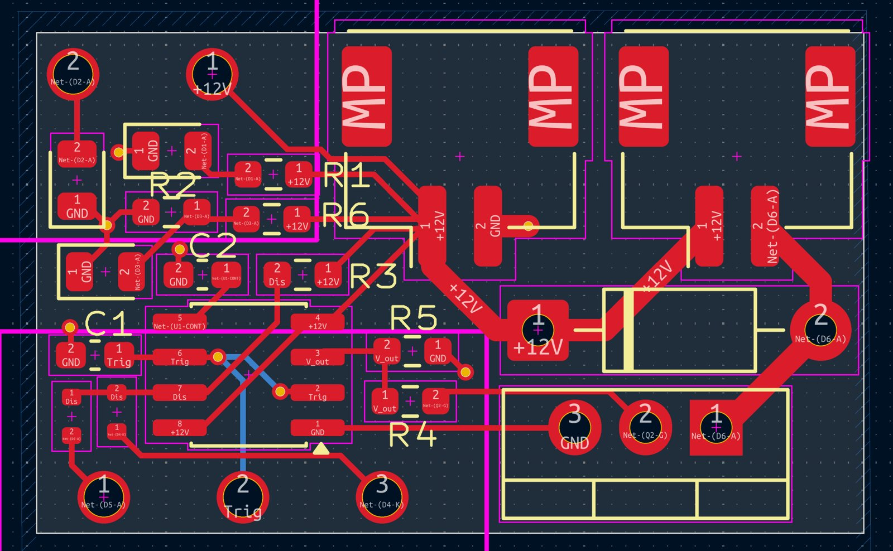
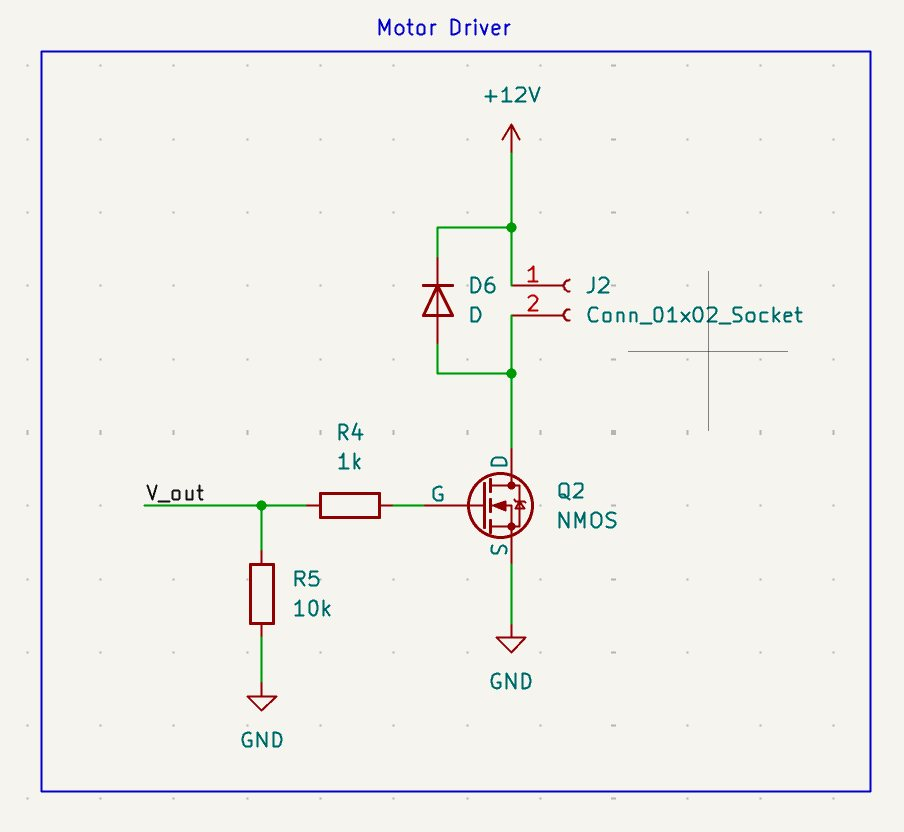
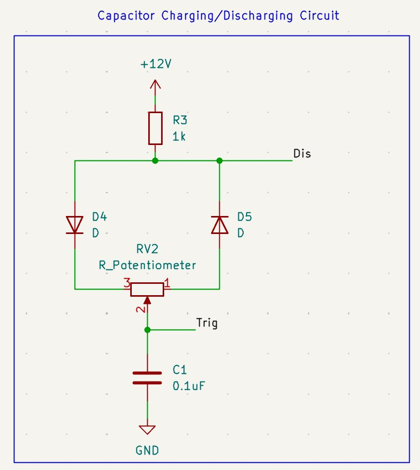
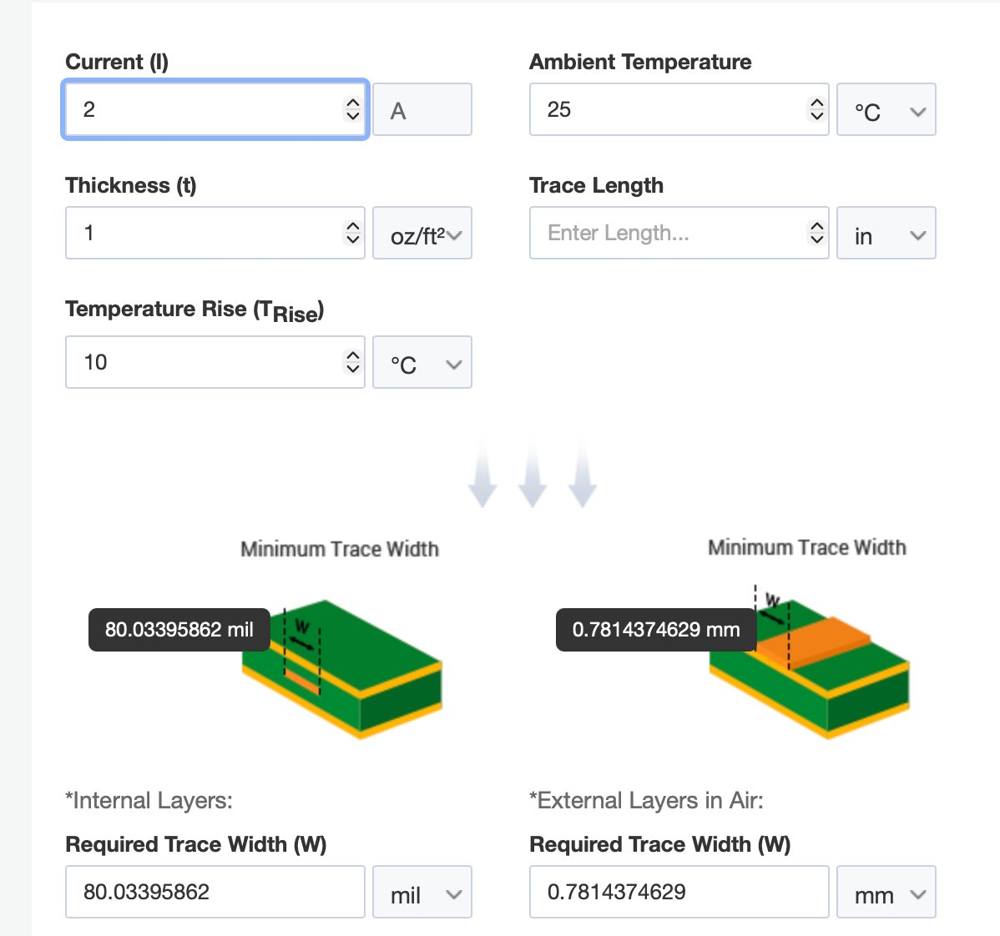
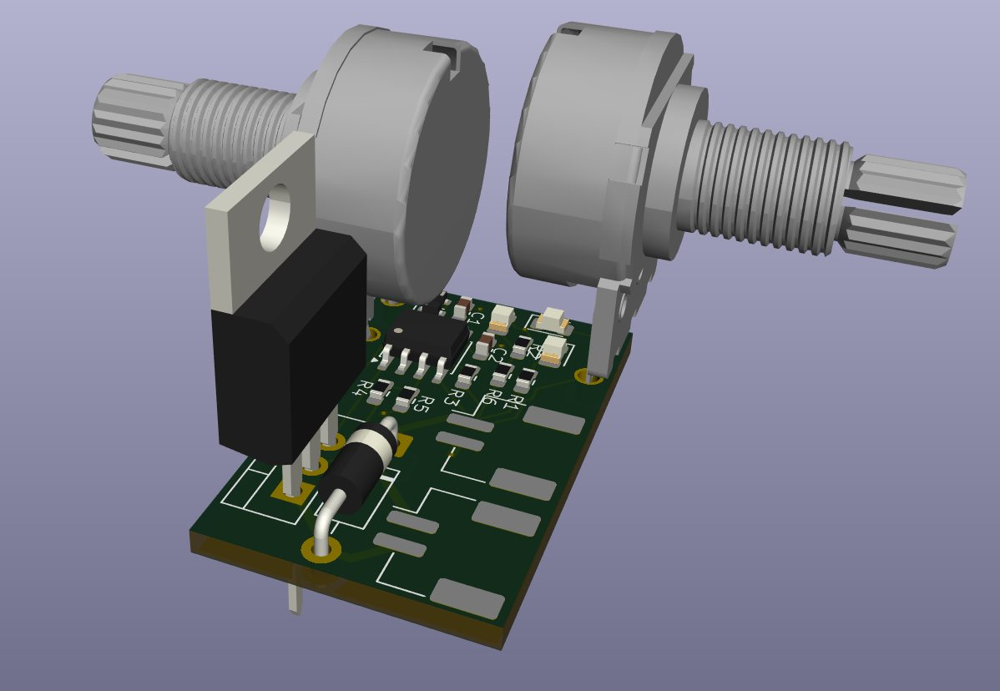

Every new member of CalSol's electrical subteam designs a board end to end. Mine controls a DC motor's speed using PWM. A 555 timer generates a square wave, and a MOSFET switches the motor's 12 V supply. The finished board is 29.7 × 18.0 mm, with two layers and 534.6 mm² of area.

How the circuit works
Motor driver. A MOSFET connects and disconnects the motor from 12 V, gated by the 555's output. The 555 can't supply motor current itself. A 1 kΩ gate resistor reduces noise, a 10 kΩ pull-down keeps the MOSFET off when it should be, and a flyback diode across the motor suppresses voltage spikes.
Timing. Two diodes separate the capacitor's charging path (+12 V → D4 → C1) from its discharging path (C1 → RV2 → D5 → DIS). A potentiometer shifts the balance between them, which sets the duty cycle. In astable mode the duty cycle depends on just three resistances, D = RB / (RA + 2RB), which makes the 555 easy to adjust.


The most interesting part to me was how a capacitor's time-varying voltage is used as essentially a clock, and how the circuit turns that continuous analog voltage into a digital signal with a duty cycle.
Sizing the traces
I designed around the MS5N-2365-CVC DC motor, which has a 1.7 A stall current, and sized the motor-current traces for 2 A to leave margin. With 1 oz copper, 25 °C ambient and a 10 °C maximum temperature rise, an IPC-2221 calculator gave about 0.78 mm, which I rounded up to 0.8 mm. Signal and LED traces carry about 20 mA, so I used 0.2 mm, comfortably above JLCPCB's 0.10 mm minimum.

Layout
- I grouped parts by functional subcircuit to keep traces short, placing the largest components first to set the board's shape. The MOSFET and potentiometers set the length; the MOSFET, flyback diode and connector set the width.
- I tucked small parts under the potentiometers' raised bodies. This triggers courtyard DRC warnings, but I checked the real dimensions. Letting one unused potentiometer pin hang off the edge saved about 80 mm².
- I kept the motor-current path and the 555 timing connections as short as possible. The TRIG net drops to the bottom layer through vias instead of wrapping around the IC.
- Connectors and potentiometers sit on the edges, where they're easy to reach.

What I'm working on now
After onboarding I was selected as one of three engineers from the 47-member electrical subteam to develop the car's safety-critical battery management system, which handles battery monitoring, protection and power control. I'm taking its finished schematic to a KiCad PCB layout, with version control on GitHub. I also wrote real-time ESP32-S3 firmware in C (FreeRTOS/ESP-IDF) that turns incoming CAN bus commands into precisely timed brake-light LED patterns through the RMT peripheral.